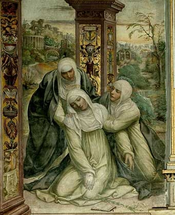

Catherine supported by female companions, possibly Cecca.
Il Sodoma [Public domain]
Little is known about Cecca’s life other than her involvement in Catherine’s early career. As a noble widow in Siena, Cecca could read and write, which helped Catherine with the foundation of her saintly life in Siena by providing a medium to interact with her followers and citizens. Cecca had three sons who died in the plague in 1347 and one daughter who became a nun at Montepulciano (a convent very near and dear to Catherine’s heart). In the earliest surviving letters, the earliest estimated at 1368, Cecca attributed herself as scribe by writing, “I Cecca am almost a nun, because I’m beginning to chant the Office with all my might along with these servants of Jesus Christ!” 1Cecca noted herself as a scribe in many letters, traveled with Catherine on almost all trips, and was one of Catherine’s closest companions.2 In the Miracoli, an account written anonymously of Catherine found in a Florentine archive, the author described Catherine’s actions, “Catherine and one of her female companions went to see the ailing man.”3 This may or may not be Cecca, but it does prove the existence of Catherine’s fondness for female companions..